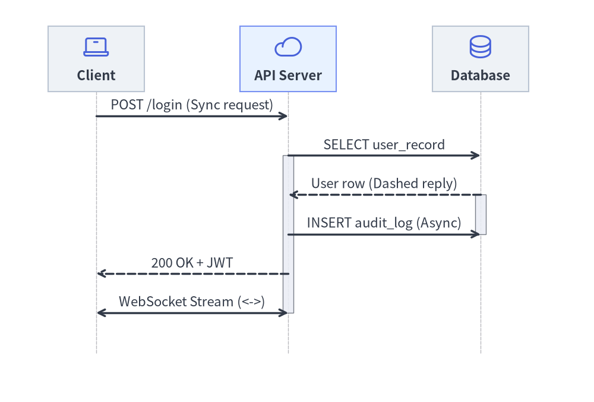
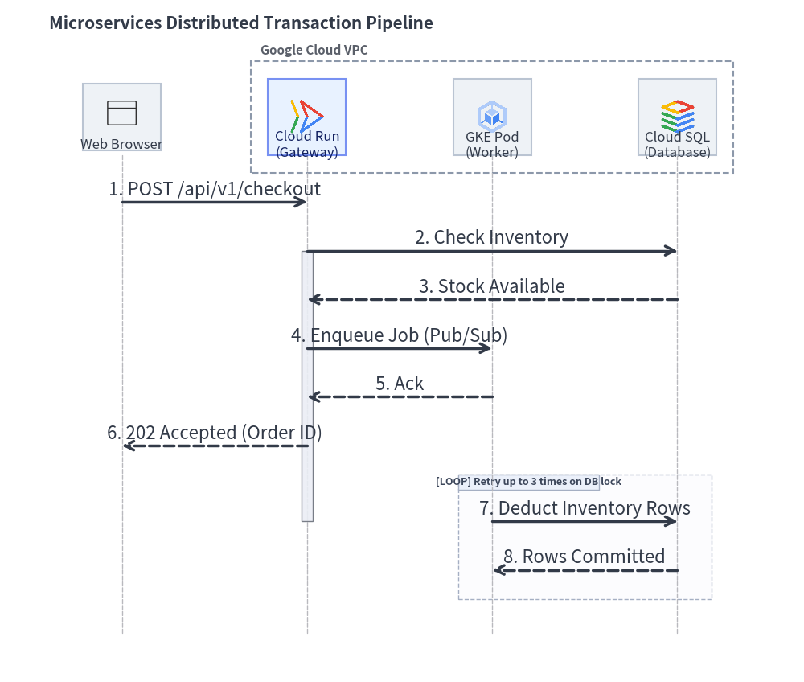
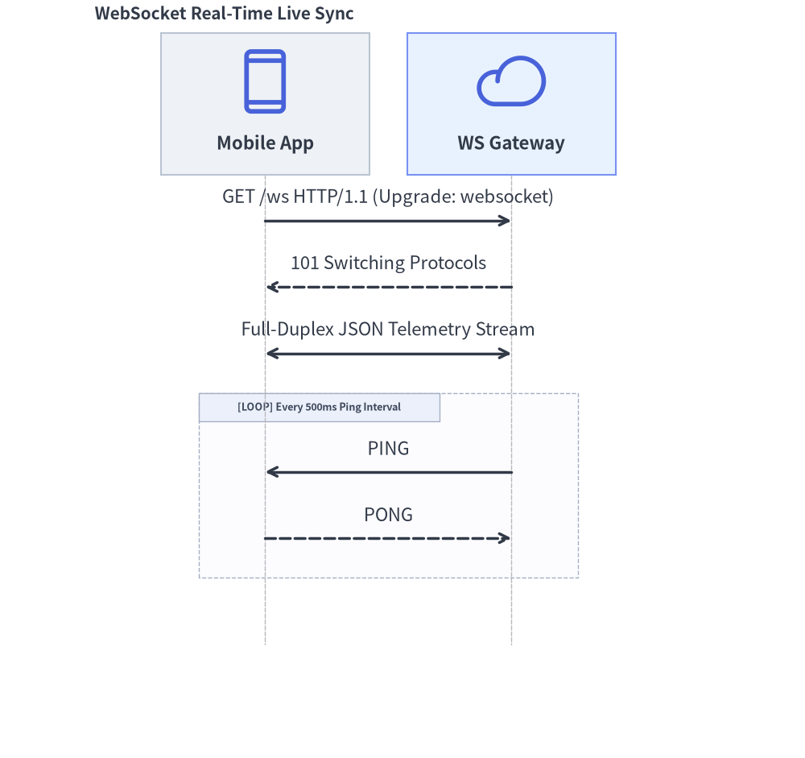
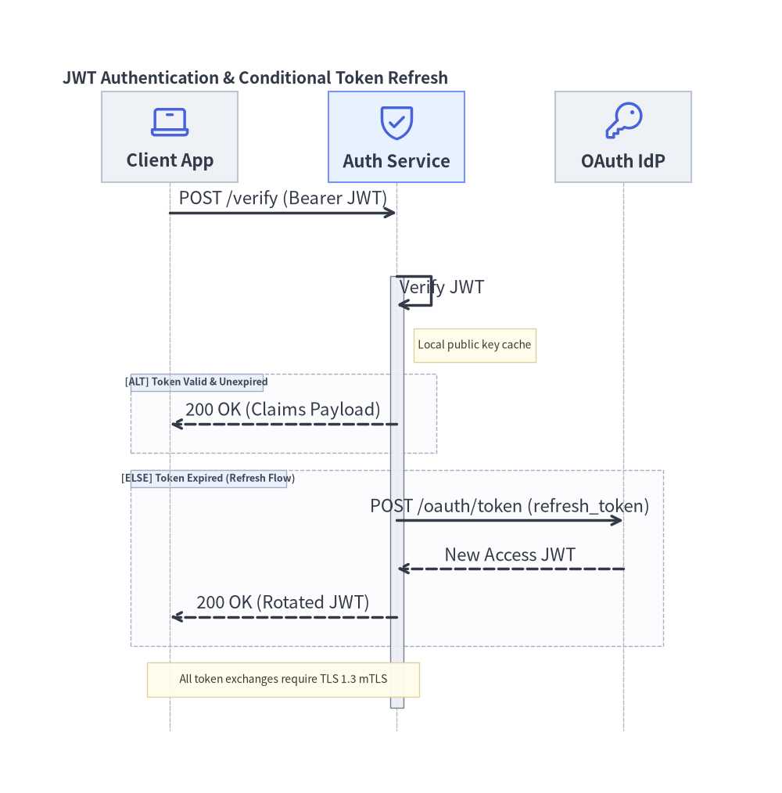

SequenceDiagram: Lifelines, Synchronous Calls & Condition Blocks
SequenceDiagram models chronological interactions and communication protocols between collaborating participants over time. Time progresses strictly downwards along vertical lifelines, with horizontal arrows representing messages.
1. Overview & Key Concepts

Source Code
from drawlib.canvas import save, setup
from drawlib.diagrams.sequence import Participant, PhosphorIcon, SequenceDiagram
from drawlib.styles import Styles
setup(width=136, height=92)
d = SequenceDiagram(
node_style=Styles.Primary,
node_text_style=Styles.DarkBold,
edge_style=Styles.DarkBold,
edge_text_style=Styles.Dark,
node_card_style=Styles.Neutral,
col_width=44.0,
step_y=9.0,
)
client = d.add(Participant((22, 15), "Client", icon=PhosphorIcon.LAPTOP, icon_size=6.5))
api = d.add(
Participant((22, 15), "API Server", icon=PhosphorIcon.CLOUD, icon_size=6.5, card_style=Styles.PrimaryNeutral)
)
db = d.add(Participant((22, 15), "Database", icon=PhosphorIcon.DATABASE, icon_size=6.5))
client.request(api, "POST /login (Sync request)")
api.activate()
api.request(db, "SELECT user_record")
db.activate()
db.reply(api, "User row (Dashed reply)")
db.deactivate()
api.request(db, "INSERT audit_log (Async)", is_async=True)
api.reply(client, "200 OK + JWT")
api.deactivate()
client.connect(api, "WebSocket Stream (<->)", arrow="<->")
d.draw(xy=(6.0, 4.0))
save()
- Vertical Lifelines: Participants are placed along the horizontal header band, with lifelines extending downwards.
- Message Semantics (illustrated in the diagram above):
request(): Solid line with a filled arrowhead for synchronous calls. Withis_async=True, renders an open stick arrowhead.reply(): Dashed line with a filled arrowhead for return responses.connect(): Bidirectional communication (arrow="<->"), such as full-duplex WebSocket channels.- Self-Calls:
p.request(p, label)loops back to the caller's own lifeline.
- Activation Boxes:
p.activate()andp.deactivate()draw execution focus rectangles along lifelines. - Autonumbering: Setting
autonumber=Trueautomatically numbers messages sequentially (1.,2.,3., ...). - Pythonic Condition Frames (
with): Use Python context managers (with d.loop(),with d.alt(),with d.opt()) to wrap structured interaction frames cleanly.
2. Constructor & Participant Management
from drawlib.diagrams.sequence import (
Block,
GcpIcon,
Participant,
ParticipantGroup,
PhosphorIcon,
SequenceDiagram,
)
from drawlib.styles import Styles
d = SequenceDiagram(
node_style=Styles.Primary,
node_text_style=Styles.DarkBold,
edge_style=Styles.DarkBold,
edge_text_style=Styles.Dark,
node_card_style=Styles.Neutral,
title="Checkout Transaction Pipeline",
autonumber=True, # Auto-number messages (1., 2., 3., ...)
)
# Participant group for clustered backend services
vpc = d.add(ParticipantGroup(title="Google Cloud VPC", padding=4.0))
api = vpc.add(Participant((22, 16), "Cloud Run\n(Gateway)", icon=GcpIcon.CLOUD_RUN, card_style=Styles.PrimaryNeutral))
db = vpc.add(Participant((22, 16), "Cloud SQL", icon=GcpIcon.CLOUD_SQL))
# External participant
client = d.add(Participant((22, 16), "Web Browser", icon=PhosphorIcon.BROWSER))
Parameter Reference Tables
SequenceDiagram Class
| Parameter | Type | Default | Description |
|---|---|---|---|
node_style |
Style |
(Required) | Base Style object for participant icons and images. |
node_text_style |
Style |
(Required) | Base Style object for participant text labels. |
edge_style |
Style |
(Required) | Base Style object for message arrows and lifelines. |
edge_text_style |
Style |
(Required) | Base Style object for message labels. |
node_card_style |
Style | None |
None |
Optional base Style for participant header cards (transparent if None). |
title |
str |
"" |
Optional banner title displayed above the diagram. |
autonumber |
bool |
False |
When True, prefixes message labels with sequential numbers (1., 2., 3., ...). |
width |
float | None |
None |
Optional fixed canvas width (auto-calculated from lifelines if None). |
height |
float | None |
None |
Optional fixed canvas height (auto-calculated from timeline steps if None). |
col_width |
float |
20.0 |
Default horizontal center-to-center spacing between participant lifelines. |
step_y |
float |
7.0 |
Vertical distance advanced per chronological message or note step. |
margin |
float |
5.0 |
Outer margin surrounding all lifelines and headers. |
style |
Style | None |
None |
Optional Style for the overall diagram background card. |
title_style |
Style | None |
None |
Optional Style override for the diagram title text. |
Participant Class
| Parameter | Type | Default | Description |
|---|---|---|---|
card_size |
tuple[float, float] |
(Required) | Header card dimensions (width, height) in canvas units. |
text |
str |
"" |
Display name shown in the participant header card (supports \n). |
icon |
IconType |
None |
GcpIcon, PhosphorIcon, CustomIcon, Dimage, PIL.Image, path, or icon callable. |
icon_size |
float |
8.0 |
Icon width/height in coordinate units. |
style |
Style | None |
None |
Optional Style override for the participant icon/image. |
text_style |
Style | None |
None |
Optional Style override for the participant label text. |
card_style |
Style | None |
None |
Optional Style override for the participant header card background/border. |
lifeline_style |
Style | None |
None |
Optional Style override for the vertical dashed lifeline. |
show |
bool |
True |
Visibility flag (hides header, lifeline, and attached messages/notes when False). |
- Horizontal Lifeline Pinning & Sizing:
d.add(participant, x: float | None = None, *, show: bool | None = None) -> Participant: Registers a participant, optionally pinning its lifeline to an explicit horizontal coordinatex.participant.set_x(x: float) -> Participant: Explicitly pins the participant's horizontal lifeline positionxand returnsself.participant.activate() -> Noneandparticipant.deactivate() -> None: Starts and ends an execution focus bar on the lifeline.participant.get_size() -> tuple[float, float]andparticipant.get_header_size() -> tuple[float, float]: Returnscard_size.
ParticipantGroup Class
| Parameter | Type | Default | Description |
|---|---|---|---|
title |
str |
"" |
Header title for the participant group boundary box. |
padding |
float |
4.0 |
Padding around enclosed participant header cards. |
style |
Style | None |
None |
Optional Style for the group boundary box. |
text_style |
Style | None |
None |
Optional Style for the group title text. |
show |
bool |
True |
Visibility flag (hides the group box when False while keeping column spacing fixed). |
group.add(participant: Participant, *, show: bool | None = None) -> Participant: Adds a participant to the group (and registers it with the parent diagram).
Messages, Notes, Spacing & Rendering API
- Participant-Level & Diagram-Level Messages:
a.request(b, label="", is_async=False, style=None, text_style=None, show=True) -> Messageord.request(a, b, ...) -> Message: Solid request arrow (->). Passing the same participant (a.request(a, "...")) renders a 3-segment self-call loop (msg.is_self_call == True).b.reply(a, label="", is_async=False, style=None, text_style=None, show=True) -> Messageord.reply(b, a, ...) -> Message: Dashed return arrow (-->).a.connect(b, label="", arrow="->", is_async=False, style=None, text_style=None, show=True) -> Messageord.connect(a, b, ...) -> Message: Custom directional or bidirectional (arrow="<->" | "->" | "-") message.
MessageFluent Mutators:msg.set_label(text: str) -> Messagemsg.set_reply(is_reply: bool = True) -> Messagemsg.set_async(is_async: bool = True) -> Messagemsg.set_arrow(arrow: Literal["->", "<->", "-"]) -> Messagemsg.set_style(style: Style) -> Messagemsg.set_text_style(text_style: Style) -> Messagemsg.set_padding(padding: float | tuple[float, float]) -> Message
- Sticky Notes (
d.note&p.note):d.note(text: str, on: Participant | None = None, over: list[Participant] | None = None, pos: Literal["left", "right", "over"] = "right", style: Style | None = None, show: bool = True) -> Note: Places a sticky note beside a single lifeline (on=p, pos="left"|"right") or spanning across multiple lifelines (over=[p1, p2]).p.note(text: str, pos: Literal["left", "right"] = "right", style: Style | None = None, show: bool = True) -> Note: Convenience shorthand ford.note(text, on=p, pos=pos, ...).NoteMutators:note.set_text(text) -> Note,note.set_style(style) -> Note,note.set_text_style(text_style) -> Note.
- Timeline Spacing, Sizing & Rendering:
d.space(dy: float = 5.0) -> None: Advances the vertical timeline by an extradyunits to add visual breathing room between phases.d.get_size() -> tuple[float, float]: Computes the total(width, height)of the sequence diagram.d.draw(xy=(0.0, 0.0), *, scale: float = 1.0) -> None: Renders the sequence diagram anchored at bottom-leftxy, proportionally scaling column widths, vertical steps, icons, and typography byscale.
3. Distributed Transaction Pipeline
The following complete example showcases participant groups, cloud icons, activations, asynchronous dispatches, and a retry loop frame:
from drawlib.canvas import save, setup
from drawlib.diagrams.sequence import GcpIcon, Participant, ParticipantGroup, PhosphorIcon, SequenceDiagram
from drawlib.styles import Styles
setup(width=165, height=140)
d = SequenceDiagram(
node_style=Styles.Primary,
node_text_style=Styles.DarkBold,
edge_style=Styles.DarkBold,
edge_text_style=Styles.Dark,
node_card_style=Styles.Neutral,
title="Microservices Distributed Transaction Pipeline",
autonumber=True,
col_width=38.0,
step_y=10.0,
)
# 1. Participants: Client on the left, Backend services in VPC group on the right
client = d.add(Participant((24, 17), "Web Browser", icon=PhosphorIcon.BROWSER, icon_size=7.5))
backend = d.add(
ParticipantGroup(
title="Google Cloud VPC",
padding=3.5,
style=Styles.MutedDashed,
)
)
api = backend.add(
Participant((24, 17), "Cloud Run\n(Gateway)", icon=GcpIcon.CLOUD_RUN, icon_size=7.5, card_style=Styles.PrimaryNeutral)
)
worker = backend.add(Participant((24, 17), "GKE Pod\n(Worker)", icon=GcpIcon.GOOGLE_KUBERNETES_ENGINE, icon_size=7.5))
db = backend.add(Participant((24, 17), "Cloud SQL\n(Database)", icon=GcpIcon.CLOUD_SQL, icon_size=7.5))
# 2. Interactions
client.request(api, "POST /api/v1/checkout")
api.activate()
api.request(db, "Check Inventory")
db.reply(api, "Stock Available")
api.request(worker, "Enqueue Job (Pub/Sub)", is_async=True)
worker.reply(api, "Ack", is_async=True)
api.reply(client, "202 Accepted (Order ID)")
api.deactivate()
with d.loop("Retry up to 3 times on DB lock"):
worker.request(db, "Deduct Inventory Rows")
db.reply(worker, "Rows Committed")
d.draw(xy=(5.0, 3.0))
save()

4. WebSocket Full-Duplex Streaming
For real-time bidirectional streams, use connect() with arrow="<->":
from drawlib.canvas import save, setup
from drawlib.diagrams.sequence import Participant, PhosphorIcon, SequenceDiagram
from drawlib.styles import Styles
setup(width=85, height=80)
d = SequenceDiagram(
node_style=Styles.Primary,
node_text_style=Styles.DarkBold,
edge_style=Styles.DarkBold,
edge_text_style=Styles.Dark,
node_card_style=Styles.Neutral,
title="WebSocket Real-Time Live Sync",
)
app = d.add(Participant((22, 15), "Mobile App", icon=PhosphorIcon.DEVICE_MOBILE, icon_size=7.5))
gateway = d.add(Participant((22, 15), "WS Gateway", icon=PhosphorIcon.CLOUD, icon_size=7.5, card_style=Styles.PrimaryNeutral))
app.request(gateway, "GET /ws HTTP/1.1 (Upgrade: websocket)")
gateway.reply(app, "101 Switching Protocols")
# Bidirectional streaming channel
app.connect(gateway, "Full-Duplex JSON Telemetry Stream", arrow="<->")
with d.loop("Every 500ms Ping Interval"):
gateway.request(app, "PING", is_async=True)
app.reply(gateway, "PONG", is_async=True)
d.draw(xy=(5.0, 5.0))
save()

5. Condition Frames (alt / else_), Self-Calls & Sticky Notes
Drawlib supports all 7 standard UML interaction operators (BlockType = Literal["loop", "alt", "else", "opt", "par", "critical", "break"]) via context managers on SequenceDiagram or direct Block(block_type, label="", diagram=d, style=None, text_style=None, show=True) instantiation:
| Frame Type | Context Manager / Constructor | Standard UML Operator |
|---|---|---|
| Loop | with d.loop("condition", show=True): |
loop |
| Alternative | with d.alt("condition", show=True):with d.else_("fallback", show=True): |
alt / else |
| Option | with d.opt("condition", show=True): |
opt |
| Parallel | with d.par("description", show=True): |
par |
| Critical Region | with Block("critical", "atomic lock", diagram=d): |
critical |
| Break | with Block("break", "fatal error", diagram=d): |
break |
Frames automatically compute their enclosing bounding box around all enclosed messages and notes, drawing the [OPERATOR] label tag in the top-left corner.
The following example demonstrates self-calls (auth.request(auth, ...)), sticky notes (auth.note(...) and d.note(..., over=[...])), and conditional alt / else_ branches:
from drawlib.canvas import save, setup
from drawlib.diagrams.sequence import Participant, PhosphorIcon, SequenceDiagram
from drawlib.styles import Styles
setup(width=138, height=140)
d = SequenceDiagram(
node_style=Styles.Primary,
node_text_style=Styles.DarkBold,
edge_style=Styles.DarkBold,
edge_text_style=Styles.Dark,
node_card_style=Styles.Neutral,
title="JWT Authentication & Conditional Token Refresh",
col_width=40.0,
step_y=8.5,
)
client = d.add(Participant((24, 16), "Client App", icon=PhosphorIcon.LAPTOP, icon_size=7.5))
auth = d.add(
Participant((24, 16), "Auth Service", icon=PhosphorIcon.SHIELD_CHECK, icon_size=7.5, card_style=Styles.PrimaryNeutral)
)
idp = d.add(Participant((24, 16), "OAuth IdP", icon=PhosphorIcon.KEY, icon_size=7.5))
client.request(auth, "POST /verify (Bearer JWT)")
auth.activate()
# Self-call for local signature verification + attached participant note
auth.request(auth, "Verify JWT")
auth.note("Local public key cache", pos="right")
# Conditional alt / else_ blocks
with d.alt("Token Valid & Unexpired"):
auth.reply(client, "200 OK (Claims Payload)")
with d.else_("Token Expired (Refresh Flow)"):
auth.request(idp, "POST /oauth/token (refresh_token)")
idp.reply(auth, "New Access JWT")
auth.reply(client, "200 OK (Rotated JWT)")
auth.deactivate()
# Spanning note across multiple participants
d.note("All token exchanges require TLS 1.3 mTLS", over=[client, auth])
d.draw(xy=(6.0, 4.0))
save()
